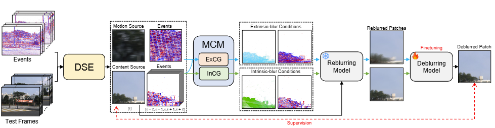
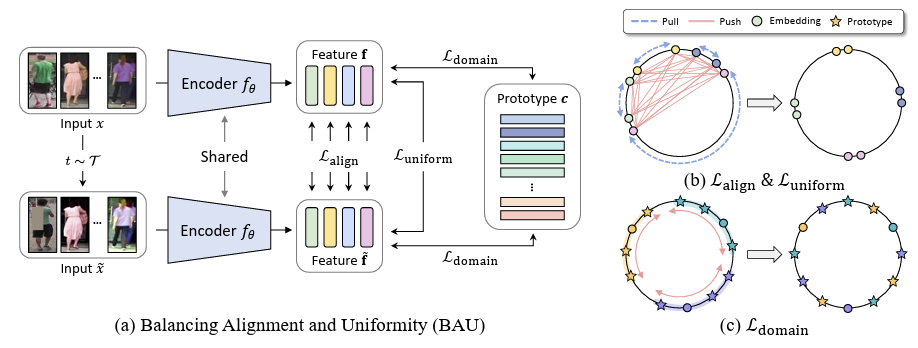
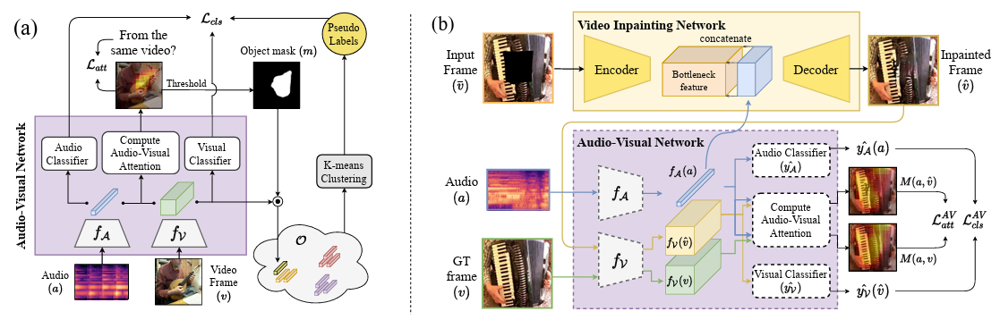
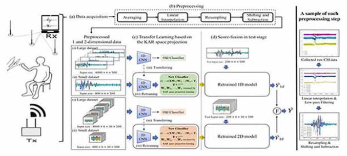
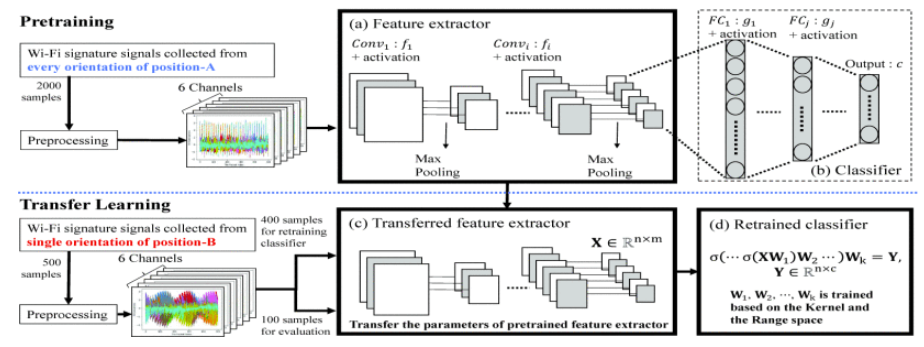

Junsik Jung
About Me
I am a Ph.D. Candidate in the School of Computing at Korea Advanced Institute of Science and Technology (KAIST), advised by Prof. Sung-Eui Yoon.
Previously, I received my M.S. degree in Electrical & Electronic Engineering from Yonsei University (2020) and B.S. degree in Electrical & Computer Engineering from University of Seoul (2018).
Research Interests
My research interests lie in Computational Photography and Machine Learning, including but not limited to:
- Neuromorphic Sensor-based Vision (Event Cameras)
- Robust & Efficient Machine Learning
- Scalable Representation Learning
Education
- Korea Advanced Institute of Science and Technology (KAIST), Ph.D., 2020 - current
- Advisor: Prof. Sung-Eui Yoon
- Yonsei University, M.S., 2018 - 2020
- Advisor: Prof. Kar-Ann Toh
- University of Seoul, B.S., 2012 - 2018
Publications
-
 TMMSubmitted to IEEE Transactions on Multimedia (TMM)
-
 BMVC
British Machine Vision Conference (BMVC), 2025
BMVC
British Machine Vision Conference (BMVC), 2025 -
 BMVC
British Machine Vision Conference (BMVC), 2025
BMVC
British Machine Vision Conference (BMVC), 2025 -
 NeurIPSAdvances in Neural Information Processing Systems (NeurIPS), 2024
-
 CVPR
IEEE/CVF Conference on Computer Vision and Pattern Recognition (CVPR), 2023
CVPR
IEEE/CVF Conference on Computer Vision and Pattern Recognition (CVPR), 2023 -
 ICASSPIEEE International Conference on Acoustics, Speech and Signal Processing (ICASSP), 2022
-
 IEEE Access
-
 ICIPIEEE International Conference on Image Processing (ICIP), 2019
 Nano Today
Nano Today
Powered by Jekyll and Minimal Light theme.